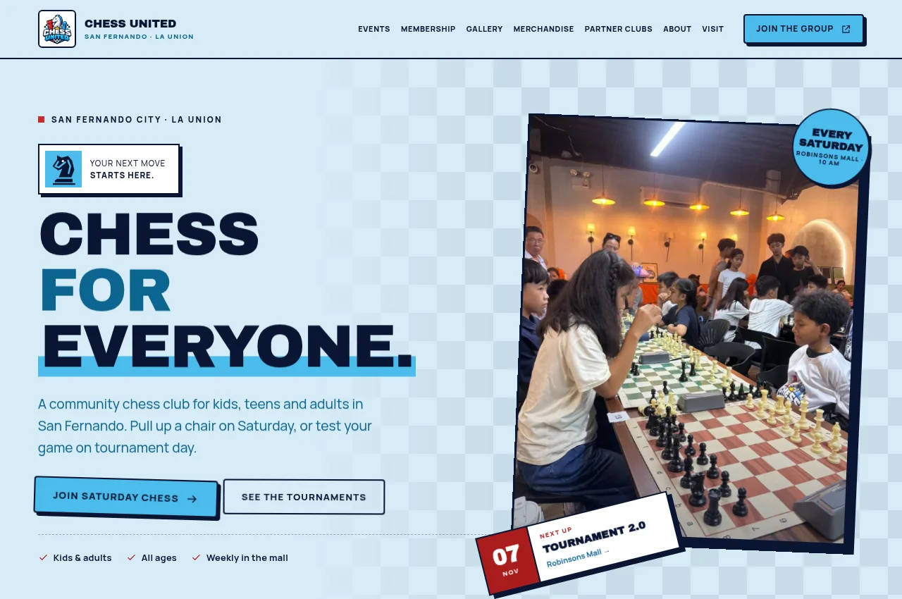
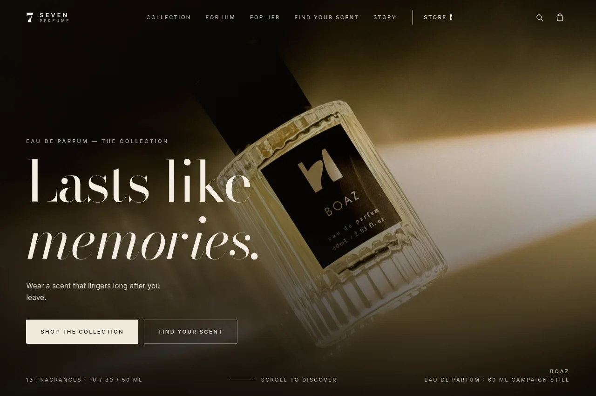

Chess United
Community websiteA chess club in San Fernando, La Union. Players can find club meetups, register for tournaments, and order merchandise.
Hello, I’m
A husband and father from the Philippines.
I build websites and tools, work in operations, and play bass at church.
God first, then family, ministry, and work. That’s the order I’m trying to live by.
A little more about me
A chess club in San Fernando, La Union. Players can find club meetups, register for tournaments, and order merchandise.

A fragrance storefront with a scent catalog, bottle sizes, a shopping cart, and shipping options.
A tool for our worship team to format chord sheets for Google Docs and ProPresenter.
Music toolA church equipment inventory, including instruments and audio gear.
Operations toolA school website with academic programs, admissions information, and pre-registration.
School websiteClinic services, location details, and appointment requests for patients in San Fernando.
Clinic websiteA pet shop’s product catalog, inquiries, and directions to the store.
Shop websiteA site for an architectural practice, with a form for project briefs and reference images.
Business websiteA shared keepsake where friends and family can write and read blessings.
Web appAn online journal for poetry, stories, and reflections.
JournalA workspace for church responsibilities and team coordination.
Private projectA devotional app and browser extension that block selected distractions during devotional time.
In developmentpfSense configuration, dual-WAN failover, traffic limits, and network monitoring.
Ongoing IT workI’m a Filipino husband and a father to a daughter. My relationship with God comes first, and my family is my next priority.
I serve on the worship and media teams at Champions’ Community, play bass, lead a cell group of young men, and serve as a missionary.
Some of the tools here started with things we needed at church, like formatting chord sheets and keeping track of equipment.
My background includes virtual assistance, customer service, e-commerce order support, and property-management operations. I’ve handled administrative coordination, vendor communication, and CRMs.
I’ve been learning web development by building these projects. I enjoy working out how something works, testing it, and fixing what breaks.
I enjoy competitive gaming, music, and experimenting with technology and networking. I also enjoy hosting and public speaking.
You’ll find my code and ongoing projects there.